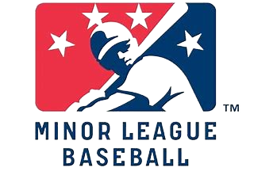
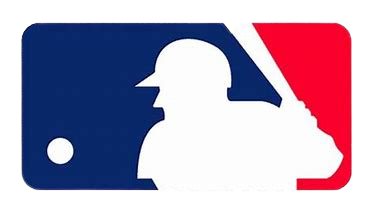

Datos Personales

Alexander Rafael Romero Galbán nacio el 9 de septiembre de 1983 en Maracaibo, Zulia. Más conocido como Álex Romero, es un beisbolista profesional venezolano que juega en la posición de jardinero. En la Major League Baseball jugó dos temporadas para el equipo Arizona Diamondbacks, desempeñándose actualmente en Ligas Menores. Debuto por primera vez el 2 de abril de 2008. Fue retirado de la MLB el 3 de octubre de 2009. Es un bateador zurdo y lanzador diestro. En su trayectoria ha estado en equipos como Arizona Diamondbacks, Tigres de Aragua y Águilas del Zulia.
Ligas menores(MiLB)

Romero fue firmado por la organización Minnesota Twins en 2002. Luego de 5 años allí, siendo considerado uno de los mejores prospectos del equipo, fue dejado libre en enero de 2007 y tomado por el equipo de Arizona Diamondbacks. Durante ese año jugó en el equipo Tucson Sidewinders, filial AAA del mismo equipo y lideró varios departamentos ofensivos de su equipo, siendo uno de los mejores en la liga. Aun así, no fue llamado en la ampliación del roster del equipo mayor.
firmó en 2010 con la organización Atlanta Braves, jugando en las sucursales AA y AAA de Atlanta hasta mediados de ese año, cuando fue nuevamente liberado. Estuvo sin contrato en la MLB hasta principios de 2011, cuando pasó a la organización Florida Marlins, actuando todo el año para sus sucursales Jacksonville Suns (AA) y New Orleans Zephyrs (AAA).
Ligas Mayores(MLB)

En 2008 comenzó la temporada en el róster de 25 del equipo gracias a un gran desempeño durante los entrenamientos primaverales, logrando superar a otros jardineros de calidad como el veterano Trot Nixon y el prospecto Gerardo Parra. Realizó su debut en la gran carpa el 2 de abril de 2008, ante el equipo Cincinnati Reds entrando en el juego como bateador emergente en la novena entrada y realizando un toque de sacrificio para mover al corredor de primera base.Romero se convirtió así en el jugador venezolano número 217 en hacer su debut en las Grandes Ligas de Béisbol. Su primer Hit lo dio el día 6 de abril, entrando como emergente por el lanzador en la décima entrada ante los Colorado Rockies. El 21 de julio conectó su primer Home Run en Grandes Ligas, en la sexta entrada ante el pitcher Rich Harden el equipo Chicago Cubs.
Liga Venezolana de Beisbol Profesional(LVBP)
En la Liga Venezolana de Béisbol Profesional, en su país natal, jugó para el equipo Tigres de Aragua hasta el año 2015. En la temporada 2006-2007 se convirtió en el Jugador Más Valioso de la final del campeonato, debido a su gran desempeño a la ofensiva durante los juegos de la final y por haber conectado el batazo que impulsó la carrera que le dio el título a su equipo luego de una histórica remontada contra Navegantes del Magallanes en el último inning de ese encuentro. Era considerado regularmente como uno de los mejores jugadores de los Tigres. También jugó con las Águilas del Zulia en la temporada 2009-2010 y con los Leones del Caracas en la temporada 2013-2014, en ambos casos en calidad de refuerzo para el round robin semifinal.

En 2015 pasa oficialmente a las filas de las Águilas del Zulia tras un cambio por el receptor Sandy León. Para la postemporada de la temporada 2015-2016 vistió la camiseta de los Navegantes del Magallanes en calidad de refuerzo.

En diciembre de 2015 firma para los Rojos del Águila de Veracruz de la Liga Mexicana de Béisbol. En la temporada 2018-2019 vuelve a vestir las camisetas de los Navegantes del Magallanes y Leones del Caracas en calidad de refuerzo para el play off, la semifinal y final, respectivamente.
Equipos
- Minnesota Twins (Equipo donde firmo).
- Arizona Diamondbacks (Equipo donde debuto).
- Tucson Sidewinders.
- Atlanta Braves.
- Florida Marlins.
- Jacksonville Suns (AA).
- New Orleans Zephyrs (AAA).
- Tigres de Aragua.
- Águilas del Zulia (Equipo donde se encuentra actualmente).
- Leones del Caracas.
- Navegantes del Magallanes.
- Rojos del Águila de Veracruz.
- Italia domino.
- San Marino.
- Tigres de Quintana Roo.
- Aguilas de Veracruz.
- Toros de Tijuana.
- Olmecas de Tabasco.
- Cardenales de Lara.
Estadisticas MLB
| Estadisticas MLB | ||||||
|---|---|---|---|---|---|---|
| Año | Equipo | AB | C | H | CP | BB |
| 2009 | Arizona | 145 | 14 | 36 | 18 | 11 |
| 2008 | 135 | 13 | 31 | 12 | 3 | |
- AB (Veces al bate).
- C (carreras).
- H (Hits).
- CP (Carreras producidas y/o empujadas).
- BB (Bases por bolas).
Estadisticas LVBP
| Estadisticas LVBP | |||||||
|---|---|---|---|---|---|---|---|
| Año | Equipo | JJ | VB | CA | H | CI | BB |
| 2022 | Águilas del Zulia | 32 | 105 | 13 | 35 | 8 | 10 |
| 2021 | 38 | 125 | 19 | 35 | 15 | 22 | |
- JJ (Juegos jugados).
- VB (Veces al bate).
- CA (Carreras anotadas).
- H (Hits).
- CI (Carreras impulsadas).
- BB (Bases por bolas).